<!DOCTYPE html>
<html lang="en" class="loading">
<head><meta name="generator" content="Hexo 3.9.0">
    <meta charset="UTF-8">
    <meta http-equiv="X-UA-Compatible" content="IE=edge,chrome=1">
    <meta name="viewport" content="width=device-width, minimum-scale=1.0, maximum-scale=1.0, user-scalable=no">
    <title>vue生命周期 - 半夜的孤独月</title>
    <meta name="apple-mobile-web-app-capable" content="yes">
    <meta name="apple-mobile-web-app-status-bar-style" content="black-translucent">
    <meta name="google" content="notranslate">
    <meta name="keywords" content="Fechin,"> 
    <meta name="description" content="个人博客,Vue生命周期每new Vue() 都会有一个初始化的过程这个就是生命周期，vue的生命周期中有许多的钩子函数如下：  

beforeCreate
created
beforeMount
moun,"> 
    <meta name="author" content="半夜的孤独月"> 
    <link rel="alternative" href="atom.xml" title="半夜的孤独月" type="application/atom+xml"> 
    <link rel="icon" href="/img/favicon.png"> 
    <link rel="stylesheet" href="//cdn.jsdelivr.net/npm/gitalk@1/dist/gitalk.css">
    <link rel="stylesheet" href="/css/diaspora.css">
    <script async src="//pagead2.googlesyndication.com/pagead/js/adsbygoogle.js"></script>
    <script>
         (adsbygoogle = window.adsbygoogle || []).push({
              google_ad_client: "ca-pub-8691406134231910",
              enable_page_level_ads: true
         });
    </script>
    <script async custom-element="amp-auto-ads" src="https://cdn.ampproject.org/v0/amp-auto-ads-0.1.js">
    </script>
</head>
</html>
<body class="loading">
    <span id="config-title" style="display:none">半夜的孤独月</span>
    <div id="loader"></div>
    <div id="single">
    <div id="top" style="display: block;">
    <div class="bar" style="width: 0;"></div>
    <a class="icon-home image-icon" href="javascript:;" data-url="https://banyeDguduyue.github.io"></a>
    <div title="播放/暂停" class="icon-play"></div>
    <h3 class="subtitle">vue生命周期</h3>
    <div class="social">
        <!--<div class="like-icon">-->
            <!--<a href="javascript:;" class="likeThis active"><span class="icon-like"></span><span class="count">76</span></a>-->
        <!--</div>-->
        <div>
            <div class="share">
                <a title="获取二维码" class="icon-scan" href="javascript:;"></a>
            </div>
            <div id="qr"></div>
        </div>
    </div>
    <div class="scrollbar"></div>
</div>

    <div class="section">
        <div class="article">
    <div class='main'>
        <h1 class="title">vue生命周期</h1>
        <div class="stuff">
            <span>六月 15, 2019</span>
            
  <ul class="post-tags-list"><li class="post-tags-list-item"><a class="post-tags-list-link" href="/tags/理解/">理解</a></li></ul>


        </div>
        <div class="content markdown">
            <h1 id="Vue生命周期"><a href="#Vue生命周期" class="headerlink" title="Vue生命周期"></a>Vue生命周期</h1><p>每new Vue() 都会有一个初始化的过程这个就是生命周期，vue的生命周期中有许多的钩子函数如下：  </p>
<ul>
<li>beforeCreate</li>
<li>created</li>
<li>beforeMount</li>
<li>mounted</li>
<li>beforeUpdate</li>
<li>updated</li>
<li>beforeDestroy</li>
<li>destroyed  </li>
</ul>
<h2 id="beforeCreate-gt-creared"><a href="#beforeCreate-gt-creared" class="headerlink" title="beforeCreate =&gt; creared"></a>beforeCreate =&gt; creared</h2><p>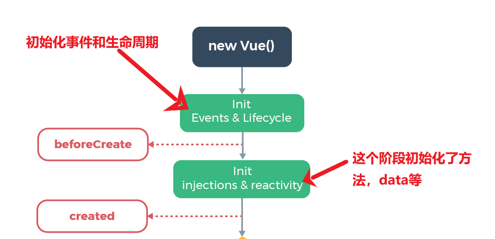<br>在这个生命周期内，从图可以看出，在beforeCreate阶段什么都没有，可以看到调用方法时报了个错，在created的时候其data数据已经绑定了，事件也是绑定好了，也可以进行调用。<br>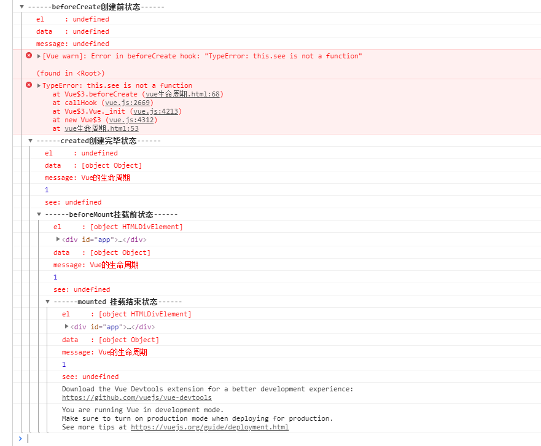 </p>
<h2 id="creared-gt-beforeMount"><a href="#creared-gt-beforeMount" class="headerlink" title="creared =&gt; beforeMount"></a>creared =&gt; beforeMount</h2><p>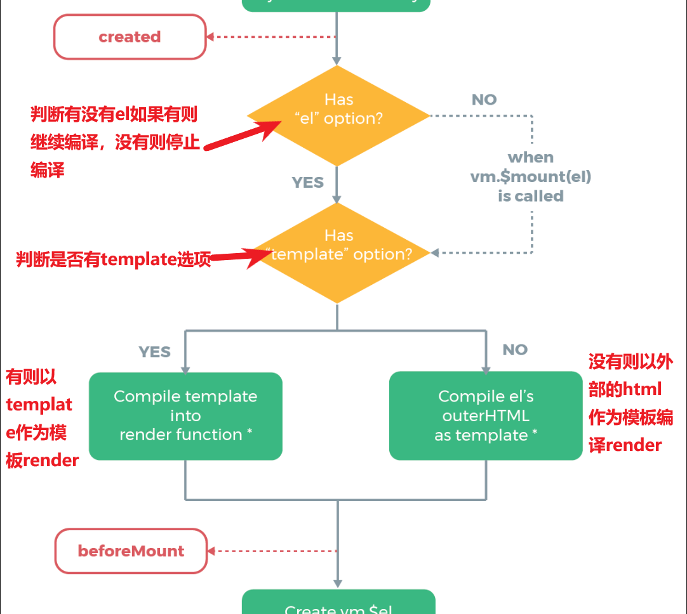<br>首先判断是否存在el就是挂载的一个点。<br>如果有则继续编译<br>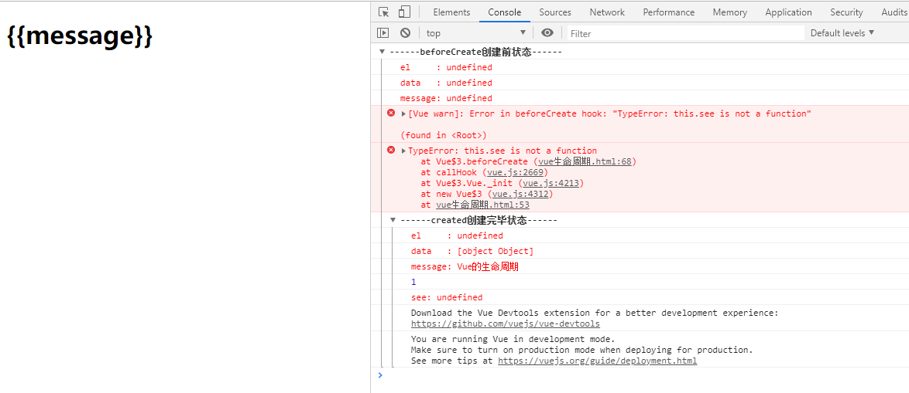<br>没有则不编译等待执行vm.$mount(el)挂载的点重新载入时就会继续执行。如下图<br>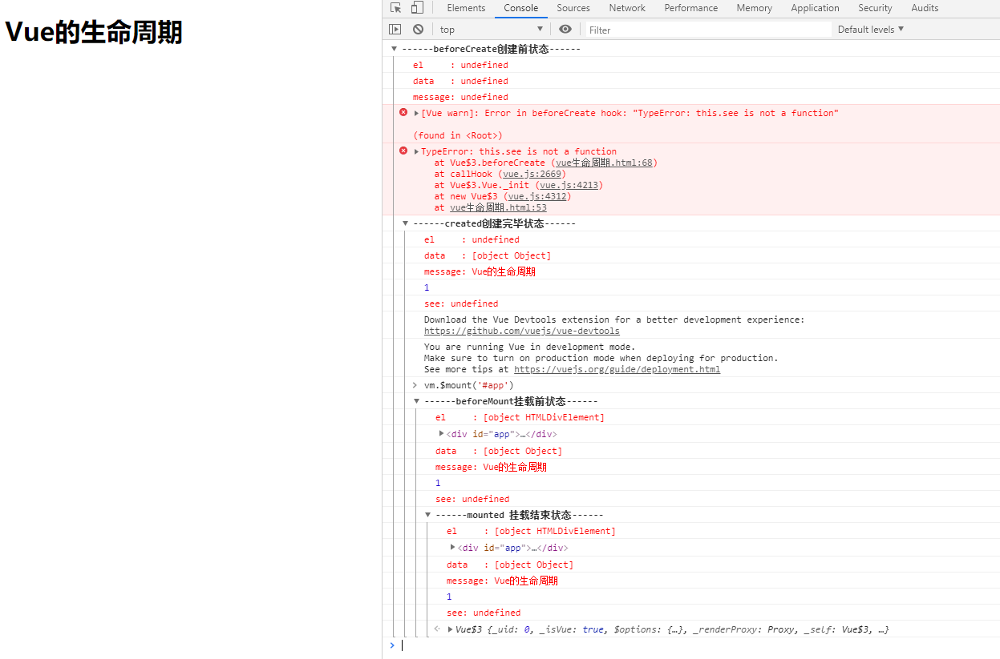<br>继续往下看是否存在template如果存在则以template作为模板render如图<br>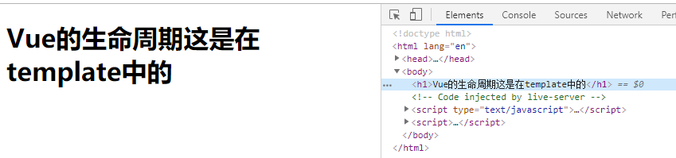<br>没有则一外部html作为模板render如图<br>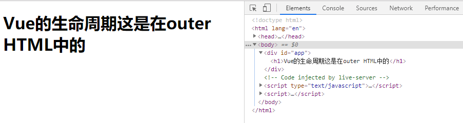<br>template优先级高于外部的html</p>
<h2 id="beforeMount-gt-Mounted"><a href="#beforeMount-gt-Mounted" class="headerlink" title="beforeMount =&gt; Mounted"></a>beforeMount =&gt; Mounted</h2><p>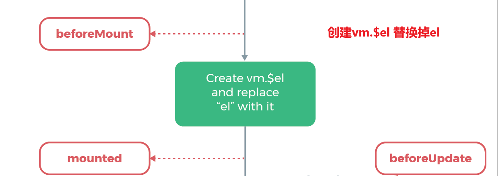<br>可以看到此时是给vue实例对象添加$el成员，并且替换掉挂在的DOM元素。</p>
<h2 id="Mounted"><a href="#Mounted" class="headerlink" title="Mounted"></a>Mounted</h2><p>在mounted之前h1中还是通过进行占位的，因为此时还有挂在到页面上，还是JavaScript中的虚拟DOM形式存在的。在mounted之后可以看到h1中的内容发生了变化。</p>
<h2 id="beforeUpdate-gt-updated"><a href="#beforeUpdate-gt-updated" class="headerlink" title="beforeUpdate =&gt; updated"></a>beforeUpdate =&gt; updated</h2><p>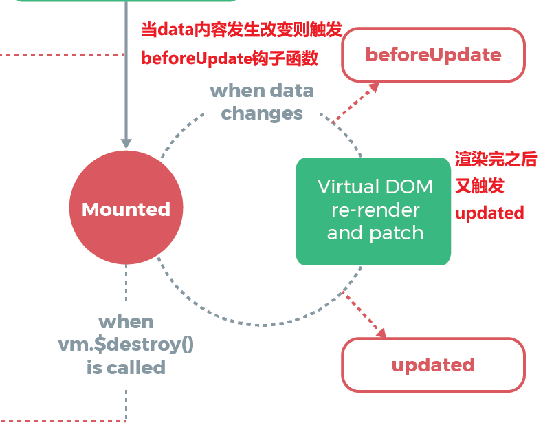<br>data发生数据变化则会调用这两个钩子函数 如调用vm.message改变data<br>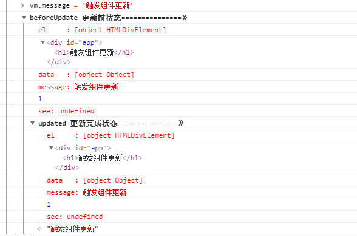  </p>
<h2 id="beforeDestroy-gt-destroyed"><a href="#beforeDestroy-gt-destroyed" class="headerlink" title="beforeDestroy =&gt; destroyed"></a>beforeDestroy =&gt; destroyed</h2><p>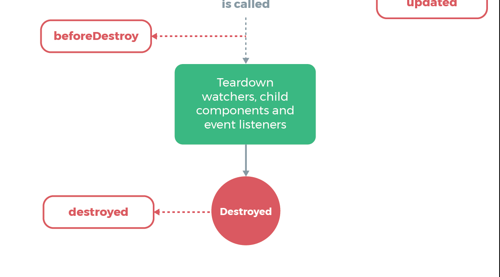<br>beforeDestroy钩子函数在实例销毁之前调用。在这一步，实例仍然完全可用。destroyed钩子函数在Vue 实例销毁后调用。调用后，Vue 实例指示的所有东西都会解绑定，所有的事件监听器会被移除，所有的子实例也会被销毁。</p>
<h3 id="总结"><a href="#总结" class="headerlink" title="总结"></a>总结</h3><p>Vue 实例有一个完整的生命周期，也就是从开始创建、初始化数据、编译模板、挂载Dom→渲染、更新→渲染、卸载等一系列过程，我们称这是 Vue 的生命周期。通俗说就是 Vue 实例从创建到销毁的过程，就是生命周期。</p>

            <!--[if lt IE 9]><script>document.createElement('audio');</script><![endif]-->
            <audio id="audio" loop="1" preload="auto" controls="controls" data-autoplay="true">
                <source type="audio/mpeg" src="">
            </audio>
            
                <ul id="audio-list" style="display:none">
                    
                        
                            <li title='0' data-url='http://tyst.migu.cn/public/product5th/product32/2019/05/1013/%E9%A2%84%E7%94%9F%E6%95%88%E5%A5%A5%E8%BF%90%E7%AC%AC46%E6%89%B93500%E9%A6%96_600547/%E6%A0%87%E6%B8%85%E9%AB%98%E6%B8%85/MP3_320_16_Stero/60054700498.mp3'></li>
                        
                    
                        
                            <li title='1' data-url='http://tyst.migu.cn/public/ringmaker01/n17/2017/07/%E9%A2%84%E7%94%9F%E6%95%88%E5%A5%A5%E8%BF%90%E7%AC%AC46%E6%89%B93500%E9%A6%96_600547/%E6%AD%8C%E6%9B%B2%E4%B8%8B%E8%BD%BD/MP3_320_16_Stero/%E5%85%8D%E8%B4%B9%E6%95%99%E5%AD%A6%E5%BD%95%E5%BD%B1%E5%B8%A6-%E5%91%A8%E6%9D%B0%E4%BC%A6.mp3'></li>
                        
                    
                </ul>
            
        </div>
        
    <div id='gitalk-container' class="comment link"
        data-ae='false'
        data-ci='ef8cdeca342133d3a396'
        data-cs='9b18d8920603d70ae9e14b05875281bcbf9e6755'
        data-r='banyeDguduyue.github.io'
        data-o='banyeDguduyue'
        data-a='banyeDguduyue'
        data-d='false'
    >查看评论</div>


    </div>
    
</div>


    </div>
</div>
</body>
<script src="//cdn.jsdelivr.net/npm/gitalk@1/dist/gitalk.min.js"></script>
<script src="//lib.baomitu.com/jquery/1.8.3/jquery.min.js"></script>
<script src="/js/plugin.js"></script>
<script src="/js/diaspora.js"></script>
<link rel="stylesheet" href="/photoswipe/photoswipe.css">
<link rel="stylesheet" href="/photoswipe/default-skin/default-skin.css">
<script src="/photoswipe/photoswipe.min.js"></script>
<script src="/photoswipe/photoswipe-ui-default.min.js"></script>

<!-- Root element of PhotoSwipe. Must have class pswp. -->
<div class="pswp" tabindex="-1" role="dialog" aria-hidden="true">
    <!-- Background of PhotoSwipe. 
         It's a separate element as animating opacity is faster than rgba(). -->
    <div class="pswp__bg"></div>
    <!-- Slides wrapper with overflow:hidden. -->
    <div class="pswp__scroll-wrap">
        <!-- Container that holds slides. 
            PhotoSwipe keeps only 3 of them in the DOM to save memory.
            Don't modify these 3 pswp__item elements, data is added later on. -->
        <div class="pswp__container">
            <div class="pswp__item"></div>
            <div class="pswp__item"></div>
            <div class="pswp__item"></div>
        </div>
        <!-- Default (PhotoSwipeUI_Default) interface on top of sliding area. Can be changed. -->
        <div class="pswp__ui pswp__ui--hidden">
            <div class="pswp__top-bar">
                <!--  Controls are self-explanatory. Order can be changed. -->
                <div class="pswp__counter"></div>
                <button class="pswp__button pswp__button--close" title="Close (Esc)"></button>
                <button class="pswp__button pswp__button--share" title="Share"></button>
                <button class="pswp__button pswp__button--fs" title="Toggle fullscreen"></button>
                <button class="pswp__button pswp__button--zoom" title="Zoom in/out"></button>
                <!-- Preloader demo http://codepen.io/dimsemenov/pen/yyBWoR -->
                <!-- element will get class pswp__preloader--active when preloader is running -->
                <div class="pswp__preloader">
                    <div class="pswp__preloader__icn">
                      <div class="pswp__preloader__cut">
                        <div class="pswp__preloader__donut"></div>
                      </div>
                    </div>
                </div>
            </div>
            <div class="pswp__share-modal pswp__share-modal--hidden pswp__single-tap">
                <div class="pswp__share-tooltip"></div> 
            </div>
            <button class="pswp__button pswp__button--arrow--left" title="Previous (arrow left)">
            </button>
            <button class="pswp__button pswp__button--arrow--right" title="Next (arrow right)">
            </button>
            <div class="pswp__caption">
                <div class="pswp__caption__center"></div>
            </div>
        </div>
    </div>
</div>


</html>
